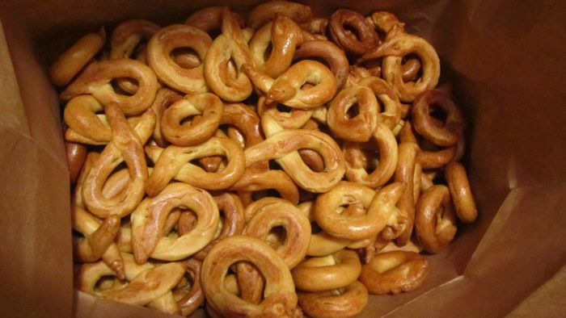

Tarals

Ingredients
- makes approx. 300
- 4 tbsp salt
- 5 tbsp black pepper
- 5 lbs all purpose flour
- 1 lb self-rising flour
- 1 lb melted butter
- 1 cup vegetable oil
- 6 eggs (beaten)
- 1.5 - 2.5 cups water
Steps
- Mix together salt, black pepper, all purpose flour, self-rising flour in large bowl
- Make hole in the dry ingredients and add pool of moist ingredients
- Gently mix in water
- Mix and knead all together and form 3-5 smooth logs
- Let logs sit half an hour covered with a damp towel
- Have a drink... or two
- Cut logs into small pieces for rolling
- Roll into tarals and place on towels to dry
- Drop tarals into boiling water until they float
- Scoop out with straining spoon and place on towels to dry
- Bake @ 350 degrees (~35 mins) until they curl and brown
- Place directly into brown paper bag